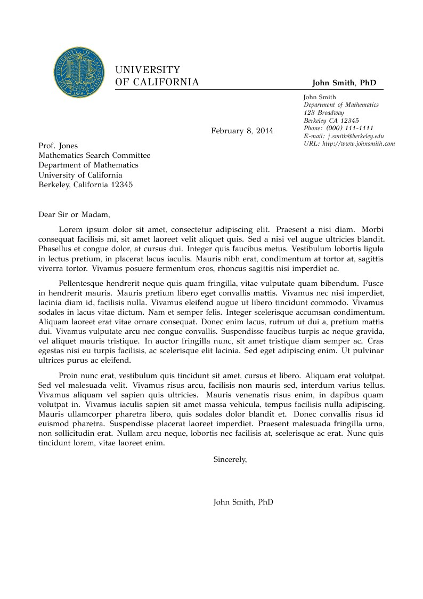

A one-of-a-kind resume builder that keeps your privacy in mind. Completely secure, customizable, portable, open-source and free forever. Try it out today!
A resume/CV generator, parsing information from YAML file to generate a static website which you can deploy on the Github Pages. Exactly like resume-version Hexo.
Add a marker to clear an entire section when user doesn't need it. For example, if the user doesn't specify experience, we must not embed Experience HTML into the resumé (An empty section doesn't look good)
This is a resume builder using react js and python django you have to just fill your all details(personal, education,work, project, skill, language) and it will automatically create a beautiful resume then you can download .i am adding more function still but you can check it out https://beautiresume.herokuapp.com/
Web application for making Resumes Online. App in not perfect but you can make it by collaborating in it, enthusiasm is always appreciated. it was my first site so have some restraint with my site.
Write HTML/CSS code to create a University letter template and Write javascript code for basic functionalities of the template.
Image is shown below.
